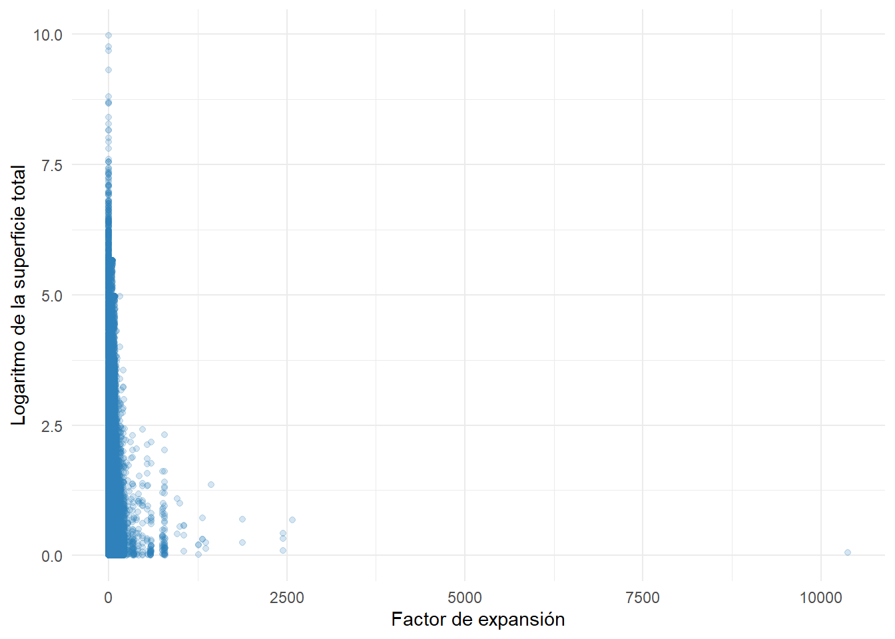
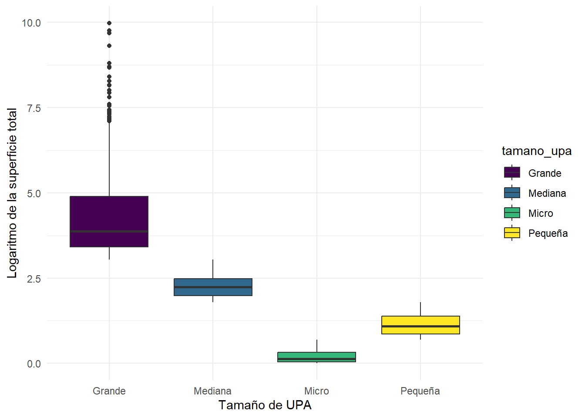
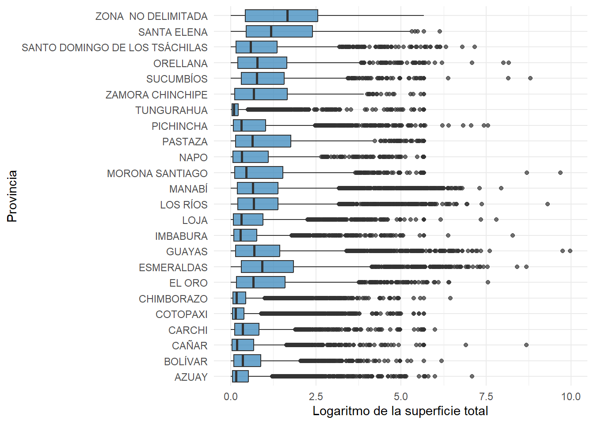
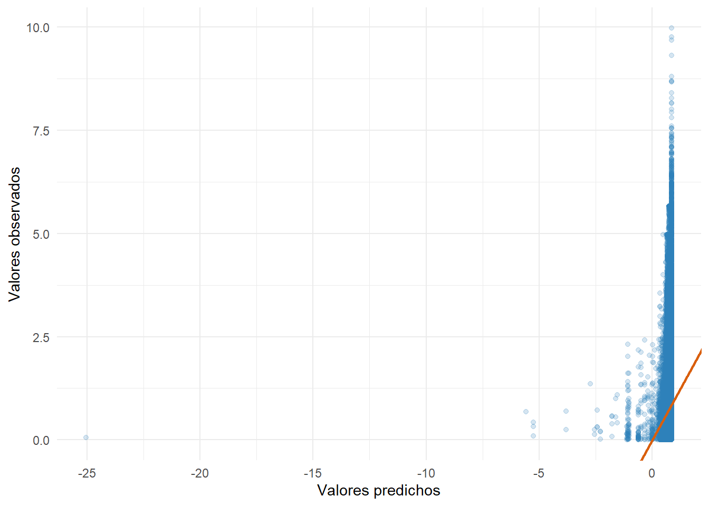
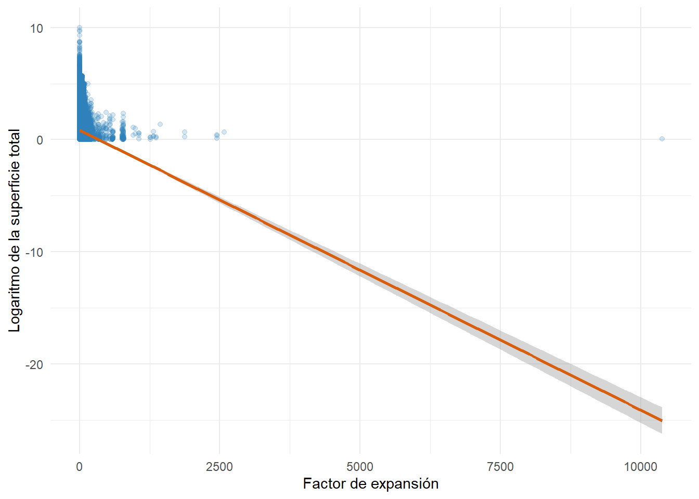
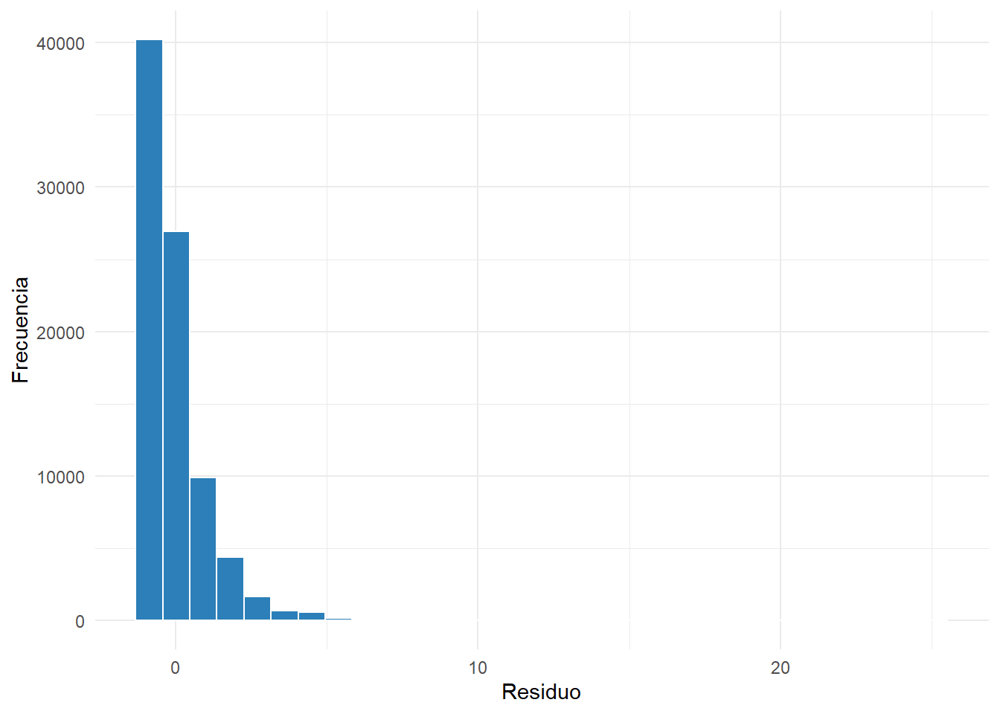
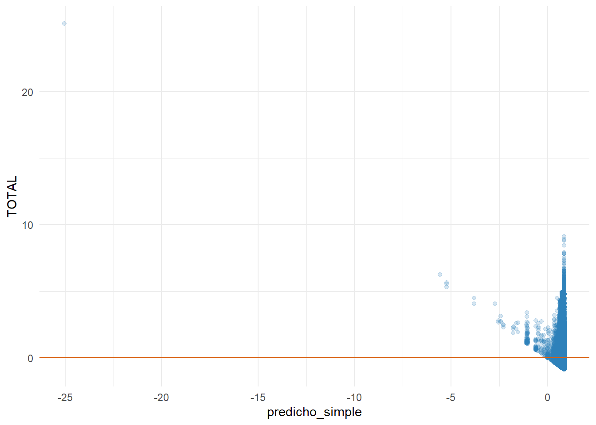
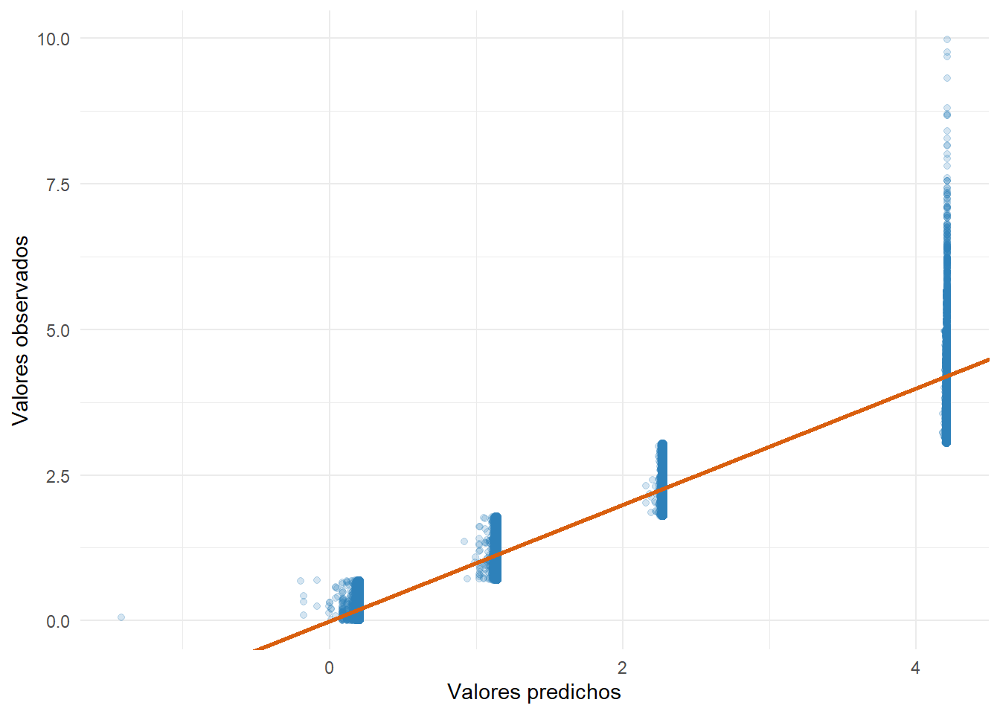
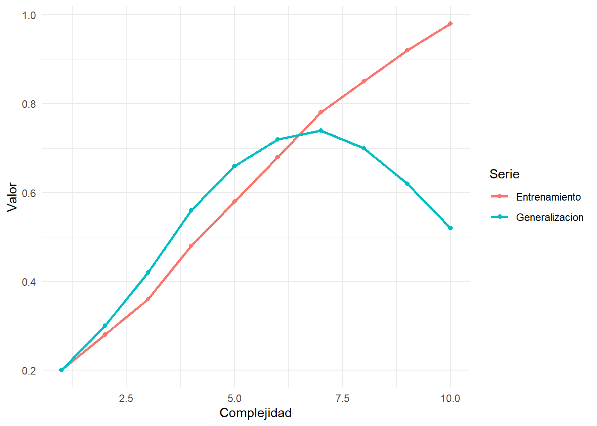
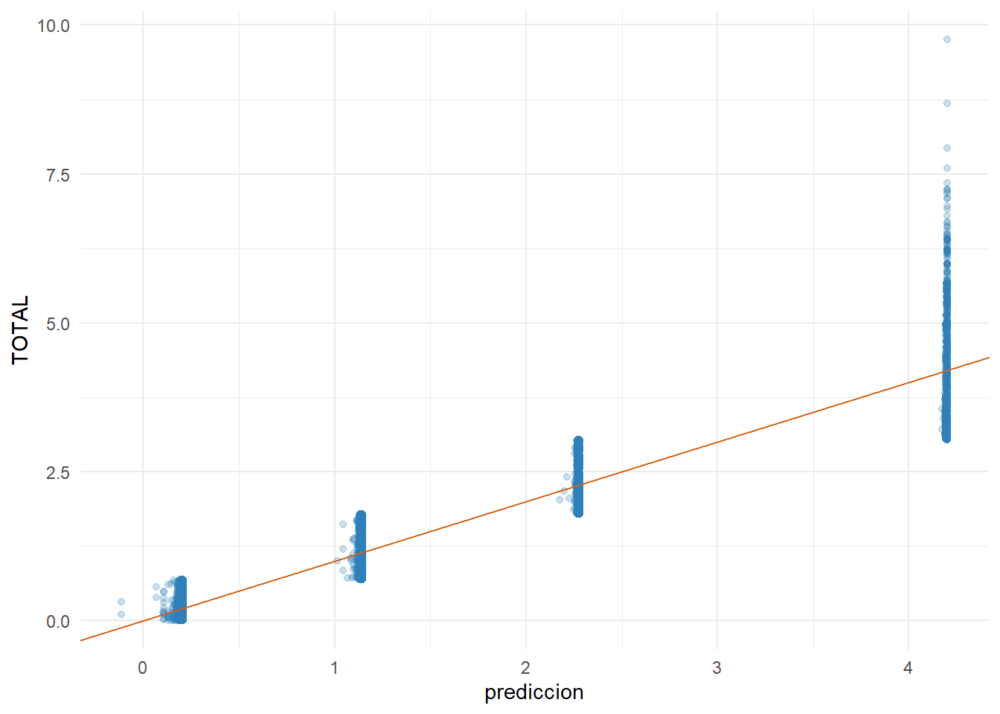

tibble(
Observaciones =
nrow(
matriz_modelo
)
) |>
kable(
caption = "Número de observaciones disponibles para análisis"
)| Observaciones |
|---|
| 84538 |
Al finalizar esta sección, el lector será capaz de:
Hasta este punto del libro hemos trabajado principalmente con estadística descriptiva, tablas, gráficos y visualizaciones científicas. Estas herramientas permiten comprender la estructura de los datos, identificar patrones y resumir información de manera efectiva.
Sin embargo, uno de los objetivos centrales de la investigación científica consiste en explicar fenómenos y comprender las relaciones existentes entre variables. Para ello resulta necesario avanzar desde la descripción hacia la modelación estadística (Gelman et al., 2020).
La modelación permite responder preguntas como:
En este capítulo comenzaremos el tránsito desde el análisis descriptivo hacia la construcción de modelos estadísticos.
La estadística descriptiva responde preguntas como:
¿Cuál es la superficie promedio?
¿Cuál es la provincia con mayor superficie?
¿Cómo se distribuyen las observaciones?La modelación responde preguntas diferentes:
¿La superficie total está relacionada con el factor de expansión?
¿Existen diferencias sistemáticas entre categorías?
¿Qué variables ayudan a explicar la variabilidad observada?En otras palabras, mientras la estadística descriptiva resume información, la modelación intenta explicar relaciones.
Un modelo estadístico es una representación simplificada de la realidad que permite describir relaciones entre variables (Faraway, 2016).
De manera general:
Variable de interés
=
Información explicada por otras variables
+
Componente aleatorioNingún modelo representa perfectamente la realidad. Su utilidad depende de su capacidad para aproximarse razonablemente al fenómeno estudiado.
Es importante mencionar a uno de los autores más relevantes en econometría, quien sistematiza la terminología empleada para distinguir las variables de un modelo (Gujarati & Porter, 2010).
En un modelo distinguimos dos tipos principales de variables.
Representa el fenómeno que deseamos explicar, donde también se la puede denominar variable explicada, predicha, regresada, respuesta, endógena, resultado y, en algunos contextos, variable controlada.
Representan el factor o conjunto de factores utilizados para explicar o predecir la variable dependiente. También reciben los nombres de variables independientes, predictoras, regresoras, estímulo, exógenas, covariables o variables de control.
En nuestro caso utilizaremos como ejemplo:
Variable dependiente:
log_supertotaly como posibles variables explicativas:
fact_exp_fin
tamano_upa
provinciaPor lo tanto, las variables fact_exp_fin, tamano_upa y provincia ayudan a explicar las variaciones de la superficie total.
Antes de estimar modelos es necesario construir una base consistente de análisis.
La matriz analítica debe:
matriz_modelo <- base_analitica |>
select(
log_supertotal,
fact_exp_fin,
tamano_upa,
provincia
)
matriz_modelo |>
glimpse()Rows: 84,538
Columns: 4
$ log_supertotal <dbl> 1.324844399, 0.564233680, 1.823597226, 0.251692135, 1.2…
$ fact_exp_fin <dbl> 66.37009, 66.37009, 66.37009, 66.37009, 66.37009, 66.37…
$ tamano_upa <chr> "Pequeña", "Micro", "Mediana", "Micro", "Pequeña", "Mic…
$ provincia <fct> AZUAY, AZUAY, AZUAY, AZUAY, AZUAY, AZUAY, AZUAY,…Interpretación
La matriz contiene las variables que utilizaremos para ilustrar los conceptos básicos de modelación.
summary(
matriz_modelo
) log_supertotal fact_exp_fin tamano_upa provincia
Min. :0.00000 Min. : 0.00 Length :84538 MANABÍ : 9294
1st Qu.:0.07844 1st Qu.: 64.92 N.unique : 4 COTOPAXI : 8664
Median :0.31765 Median : 65.80 N.blank : 0 CHIMBORAZO: 7175
Mean :0.71481 Mean : 63.55 Min.nchar: 5 AZUAY : 6883
3rd Qu.:0.97421 3rd Qu.: 67.70 Max.nchar: 7 TUNGURAHUA: 6628
Max. :9.97441 Max. :10378.25 GUAYAS : 4801
(Other) :41093 Interpretación
El resumen permite verificar rangos mínimos y máximos, así como posibles inconsistencias antes de proceder con la modelación, dado que de esta forma podemos identificar datos atípicos que afecten la robustez del modelo.
tibble(
Observaciones =
nrow(
matriz_modelo
)
) |>
kable(
caption = "Número de observaciones disponibles para análisis"
)| Observaciones |
|---|
| 84538 |
Interpretación
El tamaño de la muestra constituye un elemento importante para evaluar la estabilidad potencial de los modelos.
Uno de los errores más frecuentes en investigación consiste en asumir que dos variables correlacionadas necesariamente presentan una relación causal.
La correlación únicamente indica que ambas variables varían conjuntamente. Su objetivo principal es medir la fuerza o el grado de asociación lineal entre dos variables.
No permite concluir que una variable cause cambios en la otra (Pearl & Mackenzie, 2018).
Variable A ↑
Variable B ↑Esto puede ocurrir porque:
A causa B
B causa A
Una tercera variable causa ambas
Coincidencia estadísticaPor esta razón, la interpretación de modelos requiere sustento teórico y conocimiento del fenómeno estudiado.
Antes de estimar modelos es recomendable examinar visualmente la relación entre variables.
ggplot(
matriz_modelo,
aes(
x = fact_exp_fin,
y = log_supertotal
)
) +
geom_point(
alpha = 0.20,
color = "#2C7FB8"
) +
theme_minimal() +
labs(
x = "Factor de expansión",
y = "Logaritmo de la superficie total"
)
Interpretación
El gráfico permite identificar posibles asociaciones, concentraciones de observaciones y valores atípicos antes de construir modelos formales.
ggplot(
matriz_modelo,
aes(
x = fact_exp_fin,
y = log_supertotal
)
) +
geom_point(
alpha = 0.20,
color = "#2C7FB8"
) +
geom_smooth(
method = "lm",
color = "#D95F0E",
linewidth = 1
) +
theme_minimal() +
labs(
x = "Factor de expansión",
y = "Logaritmo de la superficie total"
)
Interpretación
La línea de tendencia ayuda a visualizar la dirección general de la asociación observada entre ambas variables.
La modelación también requiere comprender cómo se comportan las variables dentro de distintos grupos.
ggplot(
matriz_modelo,
aes(
x = tamano_upa,
y = log_supertotal,
fill = tamano_upa
)
) +
geom_boxplot() +
scale_fill_viridis_d() +
theme_minimal() +
labs(
x = "Tamaño de UPA",
y = "Logaritmo de la superficie total"
)
Interpretación
Las diferencias observadas sugieren que la categoría de tamaño podría aportar información relevante para explicar la superficie total.
ggplot(
matriz_modelo,
aes(
x = provincia,
y = log_supertotal
)
) +
geom_boxplot(
fill = "#2C7FB8",
alpha = 0.7
) +
coord_flip() +
theme_minimal() +
labs(
x = "Provincia",
y = "Logaritmo de la superficie total"
)
Interpretación
La existencia de diferencias provinciales sugiere que la dimensión territorial podría incorporarse posteriormente dentro de modelos explicativos.
Antes de estimar modelos es habitual examinar correlaciones entre variables numéricas. En este caso es importante tener en cuenta que no debe existir una correlación exacta, pues valores superiores a 0,80 pueden advertir problemas de multicolinealidad. Más adelante se detallará este problema. En términos generales, es aconsejable que la correlación entre variables explicativas sea inferior a 0,80 en valor absoluto.
correlacion_modelo <- matriz_modelo |>
select(
log_supertotal,
fact_exp_fin
) |>
cor(
use = "complete.obs"
)
correlacion_modelo |>
round(
3
) |>
kable(
caption = "Matriz de correlación preliminar"
)| log_supertotal | fact_exp_fin | |
|---|---|---|
| log_supertotal | 1.000 | -0.145 |
| fact_exp_fin | -0.145 | 1.000 |
Interpretación
La correlación proporciona una primera aproximación a la intensidad de asociación entre variables cuantitativas.
La correlación constituye únicamente un punto de partida.
La modelación permitirá posteriormente:
Datos
↓
Limpieza
↓
Transformación
↓
Análisis descriptivo
↓
Visualización
↓
Exploración de relaciones
↓
Modelo estadístico
↓
Interpretación
↓
PredicciónAntes de estimar cualquier modelo se recomienda:
Utilizando la base base_analitica:
En la sección anterior construimos la matriz analítica y exploramos relaciones preliminares entre variables. El siguiente paso consiste en cuantificar dichas relaciones mediante modelos estadísticos.
Uno de los modelos más utilizados en ciencias sociales, económicas, ambientales y agropecuarias es la regresión lineal. Este modelo permite estimar cómo cambia una variable de interés cuando otra variable experimenta variaciones (Faraway, 2016; Gelman et al., 2020).
La regresión constituye la puerta de entrada a una amplia familia de modelos estadísticos más complejos. Por esta razón, comprender sus fundamentos resulta esencial para cualquier investigador.
La regresión lineal describe la relación promedio entre una variable dependiente y una o más variables explicativas.
En su forma más simple:
Y = β0 + β1X + ε
donde:
La regresión intenta responder una pregunta sencilla:
¿Cuánto cambia la variable de interés cuando cambia la variable explicativa?
En nuestro ejemplo utilizaremos:
Variable dependiente:
log_supertotal
Variable explicativa:
fact_exp_finEstimaremos una regresión lineal simple.
modelo_simple <- lm(
log_supertotal ~ fact_exp_fin,
data = matriz_modelo
)summary(
modelo_simple
)
Call:
lm(formula = log_supertotal ~ fact_exp_fin, data = matriz_modelo)
Residuals:
Min 1Q Median 3Q Max
-0.8692 -0.6251 -0.3859 0.2601 25.0964
Coefficients:
Estimate Std. Error t value Pr(>|t|)
(Intercept) 8.735e-01 4.982e-03 175.32 <2e-16 ***
fact_exp_fin -2.497e-03 5.847e-05 -42.71 <2e-16 ***
---
Signif. codes: 0 '***' 0.001 '**' 0.01 '*' 0.05 '.' 0.1 ' ' 1
Residual standard error: 0.9651 on 84536 degrees of freedom
Multiple R-squared: 0.02112, Adjusted R-squared: 0.02111
F-statistic: 1824 on 1 and 84536 DF, p-value: < 2.2e-16Interpretación
La salida proporciona información sobre los coeficientes estimados, errores estándar, niveles de significancia y capacidad explicativa del modelo.
Cada coeficiente representa el cambio esperado en la variable dependiente ante una variación de una unidad en la variable explicativa.
Los coeficientes pueden organizarse en formato tabular.
coeficientes_simple <-
broom::tidy(
modelo_simple
)
coeficientes_simple |>
kable(
digits = 4,
caption = "Coeficientes estimados del modelo lineal simple"
)| term | estimate | std.error | statistic | p.value |
|---|---|---|---|---|
| (Intercept) | 0.8735 | 5e-03 | 175.3194 | 0 |
| fact_exp_fin | -0.0025 | 1e-04 | -42.7090 | 0 |
Interpretación
La tabla resume los parámetros estimados y facilita la presentación de resultados en informes o artículos.
La significancia estadística de los coeficientes se evalúa mediante el valor p (p-value). Si este es menor que el nivel de significancia previamente establecido (generalmente 0,05), se rechaza la hipótesis nula de que el coeficiente es igual a cero y se concluye que la variable explicativa tiene un efecto estadísticamente significativo sobre la variable dependiente. En la tabla presentada, tanto el intercepto como la variable fact_exp_fin presentan valores p inferiores a 0,001, por lo que ambos coeficientes son altamente significativos. También pueden extraerse conclusiones a partir del estadístico t, cuyo valor absoluto suele contrastarse con el valor crítico aproximado de 2.
Una vez estimado el modelo podemos calcular los valores predichos.
matriz_modelo <-
matriz_modelo |>
mutate(
predicho_simple =
predict(
modelo_simple
)
)ggplot(
matriz_modelo,
aes(
x = predicho_simple,
y = log_supertotal
)
) +
geom_point(
alpha = 0.20,
color = "#2C7FB8"
) +
geom_abline(
slope = 1,
intercept = 0,
color = "#D95F0E",
linewidth = 1
) +
theme_minimal() +
labs(
x = "Valores predichos",
y = "Valores observados"
)
Interpretación
Mientras más cercanos se encuentren los puntos a la línea diagonal, mejor será la capacidad predictiva del modelo.
ggplot(
matriz_modelo,
aes(
x = fact_exp_fin,
y = log_supertotal
)
) +
geom_point(
alpha = 0.20,
color = "#2C7FB8"
) +
geom_smooth(
method = "lm",
color = "#D95F0E",
linewidth = 1
) +
theme_minimal() +
labs(
x = "Factor de expansión",
y = "Logaritmo de la superficie total"
)
Interpretación
La línea representa la relación promedio estimada por el modelo.
Una medida importante es el coeficiente de determinación (R^2).
r2_simple <-
summary(
modelo_simple
)$r.squared
tibble(
Indicador = "R²",
Valor = r2_simple
) |>
kable(
digits = 4,
caption = "Coeficiente de determinación"
)| Indicador | Valor |
|---|---|
| R² | 0.0211 |
Interpretación
El coeficiente (R^2) indica la proporción de la variabilidad de la variable dependiente que es explicada por el modelo de regresión a partir de las variables explicativas incluidas en él.
Los residuos representan la diferencia entre los valores observados y los predichos.
matriz_modelo <-
matriz_modelo |>
mutate(
residuo_simple =
residuals(
modelo_simple
)
)ggplot(
matriz_modelo,
aes(
x = residuo_simple
)
) +
geom_histogram(
bins = 30,
fill = "#2C7FB8",
color = "white"
) +
theme_minimal() +
labs(
x = "Residuo",
y = "Frecuencia"
)
Interpretación
Los residuos permiten evaluar la adecuación del modelo y detectar posibles problemas de especificación.
ggplot(
matriz_modelo,
aes(
x = predicho_simple,
y = residuo_simple
)
) +
geom_point(
alpha = 0.20,
color = "#2C7FB8"
) +
geom_hline(
yintercept = 0,
color = "#D95F0E"
) +
theme_minimal()
Interpretación
Idealmente los residuos deberían distribuirse alrededor de cero sin patrones evidentes.
La regresión también puede incorporar variables categóricas.
Por ejemplo:
tamano_upamodelo_tamano <- lm(
log_supertotal ~ tamano_upa,
data = matriz_modelo
)broom::tidy(
modelo_tamano
) |>
kable(
digits = 4,
caption = "Modelo con categorías de tamaño de UPA"
)| term | estimate | std.error | statistic | p.value |
|---|---|---|---|---|
| (Intercept) | 4.2097 | 0.0054 | 774.8425 | 0 |
| tamano_upaMediana | -1.9395 | 0.0066 | -296.0839 | 0 |
| tamano_upaMicro | -4.0094 | 0.0056 | -718.5223 | 0 |
| tamano_upaPequeña | -3.0726 | 0.0059 | -522.3150 | 0 |
Interpretación
Los coeficientes representan diferencias promedio respecto a la categoría de referencia. Tal como se mencionó anteriormente, se deben observar los valores p para extraer conclusiones acerca de la significancia estadística.
En la práctica, los fenómenos suelen depender de múltiples factores simultáneamente.
La regresión múltiple extiende el modelo simple incorporando más variables explicativas.
Su forma general es:
Y = β0 + β1X1 + β2X2 + … + βkXk + ε
modelo_multiple <- lm(
log_supertotal ~
fact_exp_fin +
tamano_upa,
data = matriz_modelo
)broom::tidy(
modelo_multiple
) |>
kable(
digits = 4,
caption = "Resultados del modelo múltiple"
)| term | estimate | std.error | statistic | p.value |
|---|---|---|---|---|
| (Intercept) | 4.2139 | 0.0055 | 772.6931 | 0 |
| fact_exp_fin | -0.0002 | 0.0000 | -8.4629 | 0 |
| tamano_upaMediana | -1.9355 | 0.0066 | -294.8109 | 0 |
| tamano_upaMicro | -4.0031 | 0.0056 | -711.2700 | 0 |
| tamano_upaPequeña | -3.0671 | 0.0059 | -518.4462 | 0 |
Interpretación
Cada coeficiente representa el efecto estimado de una variable manteniendo constantes las demás variables incluidas en el modelo. Es decir, cada una de las variables regresoras ayuda a explicar las variaciones de la superficie total.
comparacion_modelos <- tibble(
Modelo = c(
"Simple",
"Tamaño UPA",
"Múltiple"
),
R2 = c(
summary(modelo_simple)$r.squared,
summary(modelo_tamano)$r.squared,
summary(modelo_multiple)$r.squared
)
)
comparacion_modelos |>
kable(
digits = 4,
caption = "Comparación del ajuste entre modelos"
)| Modelo | R2 |
|---|---|
| Simple | 0.0211 |
| Tamaño UPA | 0.9037 |
| Múltiple | 0.9037 |
Interpretación
La comparación permite evaluar si la incorporación de variables adicionales mejora la capacidad explicativa. Al disponer de más variables, el modelo cuenta con mayor información para ajustar los datos observados, lo que puede reducir o mantener el error de predicción y, en consecuencia, incrementar el valor de (R^2).
Hasta este punto hemos aprendido a:
Utilizando la base de datos denominada matriz_modelo:
En la sección anterior aprendimos a construir e interpretar modelos de regresión lineal. Sin embargo, estimar un modelo es solamente una parte del proceso de modelación.
Un buen modelo no es necesariamente el que mejor se ajusta a los datos observados, sino aquel que logra generalizar adecuadamente y producir resultados útiles para comprender el fenómeno estudiado (James et al., 2021).
En esta sección introduciremos conceptos fundamentales que servirán como puente hacia técnicas más avanzadas de modelación y aprendizaje estadístico.
Tradicionalmente, muchos modelos estadísticos han sido utilizados con fines explicativos.
Por ejemplo:
¿Qué factores explican la superficie agrícola?Sin embargo, los modelos también pueden utilizarse para predecir.
Por ejemplo:
¿Cuál sería la superficie esperada para una nueva observación?Aunque explicación y predicción están relacionadas, no son exactamente lo mismo.
Podemos utilizar el modelo estimado anteriormente para generar predicciones.
matriz_modelo <-
matriz_modelo |>
mutate(
prediccion_multiple =
predict(
modelo_multiple
)
)tibble(
Estadistico = c(
"Mínimo",
"Primer cuartil",
"Mediana",
"Media",
"Tercer cuartil",
"Máximo"
),
Valor = as.numeric(
summary(
matriz_modelo$prediccion_multiple
)
)
) |>
kable(
digits = 4,
caption = "Resumen de valores predichos"
)| Estadistico | Valor |
|---|---|
| Mínimo | -1.4172 |
| Primer cuartil | 0.2004 |
| Mediana | 0.2006 |
| Media | 0.7148 |
| Tercer cuartil | 1.1364 |
| Máximo | 4.2139 |
Interpretación
Los valores predichos representan la respuesta estimada por el modelo para cada observación de la base de datos.
ggplot(
matriz_modelo,
aes(
x = prediccion_multiple,
y = log_supertotal
)
) +
geom_point(
alpha = 0.20,
color = "#2C7FB8"
) +
geom_abline(
slope = 1,
intercept = 0,
color = "#D95F0E",
linewidth = 1
) +
theme_minimal() +
labs(
x = "Valores predichos",
y = "Valores observados"
)
Interpretación
Mientras más cercanos se encuentren los puntos a la diagonal, mejor será la capacidad predictiva del modelo.
Uno de los problemas más importantes en modelación es el sobreajuste.
Un modelo sobreajustado aprende excesivamente bien los datos observados, pero pierde capacidad para generalizar a nuevos datos (Hastie et al., 2009).
Conceptualmente:
Modelo simple
↓
Menor ajuste
↓
Mayor generalizaciónModelo excesivamente complejo
↓
Mayor ajuste aparente
↓
Menor generalizaciónLa relación entre complejidad y capacidad predictiva suele seguir un patrón similar al siguiente.
datos_complejidad <- tibble(
Complejidad = 1:10,
Entrenamiento =
c(
0.20,
0.28,
0.36,
0.48,
0.58,
0.68,
0.78,
0.85,
0.92,
0.98
),
Generalizacion =
c(
0.20,
0.30,
0.42,
0.56,
0.66,
0.72,
0.74,
0.70,
0.62,
0.52
)
)
datos_complejidad |>
pivot_longer(
-Complejidad,
names_to = "Serie",
values_to = "Valor"
) |>
ggplot(
aes(
x = Complejidad,
y = Valor,
color = Serie
)
) +
geom_line(
linewidth = 1
) +
geom_point() +
theme_minimal()
Interpretación
A medida que aumenta la complejidad del modelo, la capacidad de ajuste suele mejorar. Sin embargo, la capacidad de generalización puede deteriorarse.
Una estrategia común consiste en dividir los datos en dos conjuntos:
EntrenamientoUtilizado para estimar el modelo.
ValidaciónUtilizado para evaluar el desempeño del modelo.
set.seed(
123
)
id_entrenamiento <-
sample(
1:nrow(
matriz_modelo
),
size =
round(
0.70 *
nrow(
matriz_modelo
)
)
)
datos_entrenamiento <-
matriz_modelo[
id_entrenamiento,
]
datos_validacion <-
matriz_modelo[
-id_entrenamiento,
]tibble(
Conjunto = c(
"Entrenamiento",
"Validación"
),
Observaciones = c(
nrow(
datos_entrenamiento
),
nrow(
datos_validacion
)
)
) |>
kable(
caption = "Distribución de observaciones entre conjuntos"
)| Conjunto | Observaciones |
|---|---|
| Entrenamiento | 59177 |
| Validación | 25361 |
Interpretación
La división permite evaluar si el modelo mantiene un desempeño razonable sobre observaciones no utilizadas durante la estimación.
modelo_entrenamiento <- lm(
log_supertotal ~
fact_exp_fin +
tamano_upa,
data =
datos_entrenamiento
)datos_validacion <-
datos_validacion |>
mutate(
prediccion =
predict(
modelo_entrenamiento,
newdata =
datos_validacion
)
)ggplot(
datos_validacion,
aes(
x = prediccion,
y = log_supertotal
)
) +
geom_point(
alpha = 0.25,
color = "#2C7FB8"
) +
geom_abline(
slope = 1,
intercept = 0,
color = "#D95F0E"
) +
theme_minimal()
Interpretación
La comparación permite evaluar si el modelo conserva capacidad predictiva fuera de la muestra de entrenamiento.
Una medida ampliamente utilizada para evaluar predicciones es la raíz del error cuadrático medio (RMSE). De acuerdo con Muñoz (2013), es una medida que cuantifica la diferencia promedio entre los valores observados y los valores predichos por un modelo de regresión. En otras palabras, indica qué tan cerca están las predicciones del modelo de los valores reales.
rmse <- sqrt(
mean(
(
datos_validacion$log_supertotal -
datos_validacion$prediccion
)^2,
na.rm = TRUE
)
)
tibble(
Indicador = "RMSE",
Valor = rmse
) |>
kable(
digits = 4,
caption = "Error cuadrático medio de validación"
)| Indicador | Valor |
|---|---|
| RMSE | 0.3011 |
Interpretación
En muchos contextos, el efecto de una variable puede depender del nivel de otra.
Estas relaciones se conocen como interacciones.
Conceptualmente:
Efecto de X
↓
Depende de Zmodelo_interaccion <- lm(
log_supertotal ~
fact_exp_fin *
tamano_upa,
data =
matriz_modelo
)broom::tidy(
modelo_interaccion
) |>
kable(
digits = 4,
caption = "Modelo con interacción"
)| term | estimate | std.error | statistic | p.value |
|---|---|---|---|---|
| (Intercept) | 4.5066 | 0.0070 | 641.2431 | 0 |
| fact_exp_fin | -0.0110 | 0.0002 | -64.3697 | 0 |
| tamano_upaMediana | -2.1968 | 0.0094 | -232.4837 | 0 |
| tamano_upaMicro | -4.3069 | 0.0073 | -593.1446 | 0 |
| tamano_upaPequeña | -3.3617 | 0.0080 | -418.8190 | 0 |
| fact_exp_fin:tamano_upaMediana | 0.0103 | 0.0002 | 51.9418 | 0 |
| fact_exp_fin:tamano_upaMicro | 0.0110 | 0.0002 | 63.9901 | 0 |
| fact_exp_fin:tamano_upaPequeña | 0.0109 | 0.0002 | 60.9440 | 0 |
Interpretación
Los términos de interacción permiten evaluar si la relación entre variables cambia según la categoría observada.
comparacion_final <- tibble(
Modelo = c(
"Simple",
"Múltiple",
"Interacción"
),
R2 = c(
summary(
modelo_simple
)$r.squared,
summary(
modelo_multiple
)$r.squared,
summary(
modelo_interaccion
)$r.squared
)
)
comparacion_final |>
kable(
digits = 4,
caption = "Comparación final entre modelos"
)| Modelo | R2 |
|---|---|
| Simple | 0.0211 |
| Múltiple | 0.9037 |
| Interacción | 0.9082 |
Interpretación
La comparación permite evaluar cómo cambia la capacidad explicativa a medida que incorporamos complejidad al modelo.
Datos
↓
Limpieza
↓
Transformación
↓
Análisis descriptivo
↓
Visualización
↓
Modelo inicial
↓
Diagnóstico
↓
Validación
↓
Predicción
↓
InterpretaciónSe recomienda:
Utilizando la base matriz_modelo:
En este capítulo realizamos la transición entre el análisis descriptivo y la modelación estadística.
En la primera parte construimos la matriz analítica, revisamos conceptos fundamentales y exploramos relaciones preliminares entre variables.
En la segunda parte introdujimos la regresión lineal simple y múltiple, interpretando coeficientes, residuos y medidas de ajuste.
Finalmente, en esta tercera parte abordamos conceptos asociados a la predicción, validación, sobreajuste, partición de datos e interacciones. Estos elementos constituyen la base conceptual sobre la que se desarrollan modelos estadísticos y técnicas modernas de aprendizaje automático.
Los conocimientos adquiridos en este capítulo servirán como fundamento para los capítulos posteriores dedicados a técnicas de modelación más avanzadas.